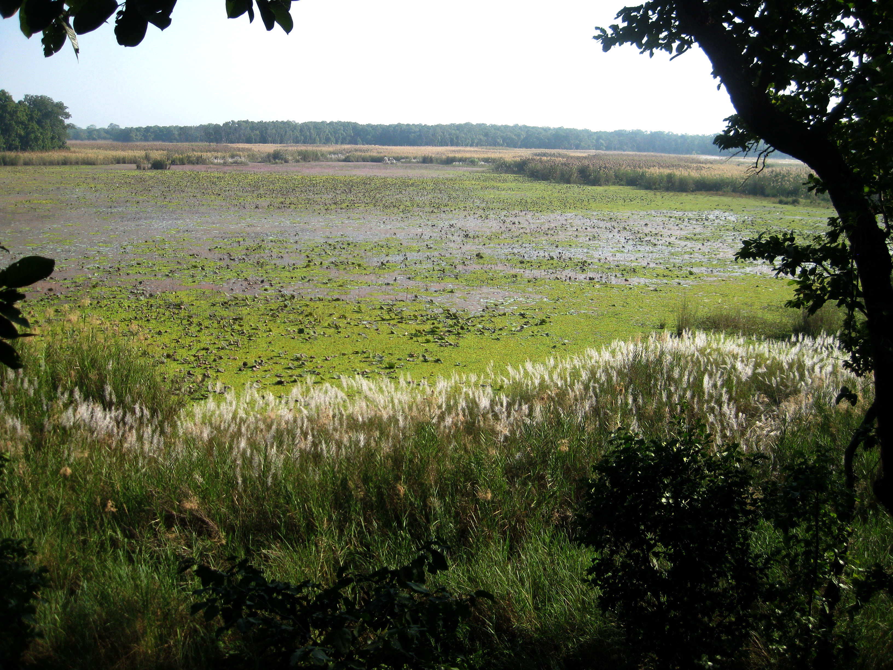

The Green Soul of Suklaphata
Suklaphata’s grasslands and forests are home to an incredible variety of plant life — each leaf and petal adding to the park’s beauty and balance. Shuklaphanta National Park is home to approximately 700 plant species, with dominant vegetation including vast grasslands, Sal forests, and riverine woods. The grasslands feature key species like Imperata cylindrica and Heteropogon contortus, while the marshes contain Phragmites karka and Saccharum spontaneum. The dominant trees are Sal (Shorea robusta) in the forests, and Sissoo (Dalbergia sissoo) and Khair (Acacia catechu) along the rivers.
Major Plant Species
- Sal Trees (Shorea robusta) — forming dense forests in the northern part of the park.
- Kans Grass (Saccharum spontaneum) — waves across the grasslands after monsoon rains.
- Wildflowers — bright colors bloom through spring and early summer.
- Silk Cotton and Acacia — providing shade and shelter for countless animals.
“Every leaf is a miracle waiting for someone to notice.”